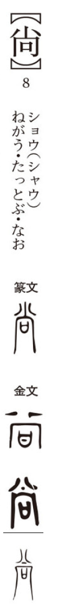

尚

Kun: nao | On: shō
esteem, revere, value, aspire; still, yet, furthermore
Explanation
The character 尚 originates in a ritual setting. The component 向 depicts a window or opening through which light enters, and before it was placed a vessel holding sacred words of prayer to invite the presence of the deity. The element 八 signifies the divine radiance or numinous breath dispersing and filling the space. From this imagery of reverent offering and welcoming of the gods, 尚 came to mean esteeming, valuing, or aspiring toward something higher, and later extended to the sense of “still, yet, furthermore.”